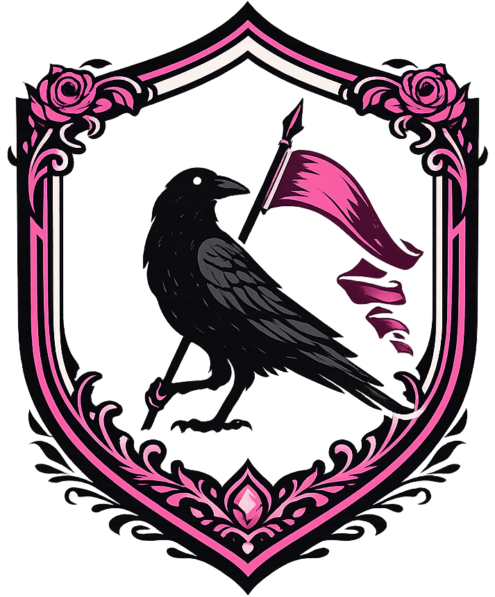

SISTEMA DE SEGURANÇA E REPARO DO WINDOWS
Três poderosas ferramentas em um único aplicativo
Malicious Software Removal Tool
System File Checker
Deployment Image Servicing
Simples, rápido e eficiente
Faça o download do RAVENGUARD e execute como administrador
Selecione entre RAVENGUARD, SFC Scan ou DISM Repair
A ferramenta executará automaticamente em segundo plano
Seu Windows estará reparado e seguro
Baixe agora o RAVENGUARD gratuitamente
Requisitos: Windows 10/11, 2GB RAM, 100MB de espaço livre